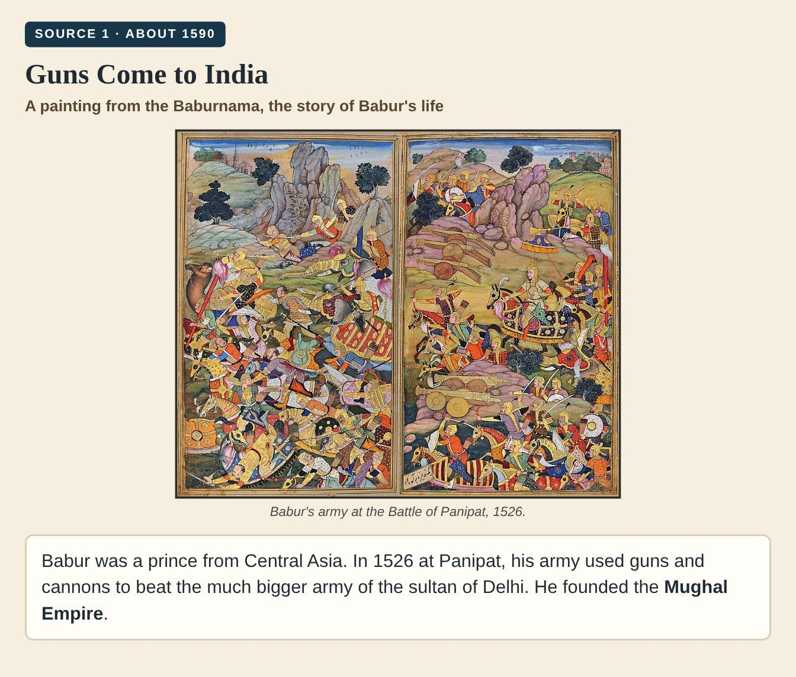

How it works: read the source pages → answer the question about today's big idea → read the fact file → write 1–2 sentences. Done = all parts green, then turn in at the bottom.
Word help (tap to open)
- Mughal (MOO-gul) = the Muslim empire that ruled most of India from 1526
- Jizya (JIZ-yah) = a tax non-Muslims paid under some Muslim rulers
- Tolerance = accepting people of other faiths
- Cultural blending = mixing traditions into something new
- Primary source = something made by people who lived at the time: a letter, a speech, a picture, a law

Click the page to make it bigger.
Turn in your work
Your work saves on this device, so you can come back later. Your teacher sees it after you turn it in.
Sources: paintings from the Baburnama and Akbarnama (about 1590s); Abul Fazl, inscription for a temple in Kashmir (late 1500s); Mughal painting of Akbar's House of Worship (about 1605); the Taj Mahal (1632–1653); portrait of Aurangzeb (1600s). Images public domain, via Wikimedia Commons.